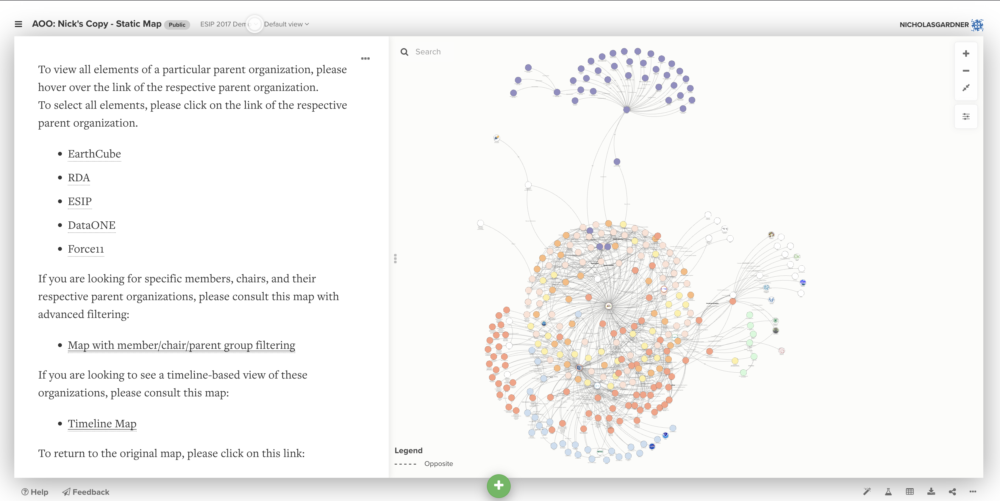

During my first summer (during high school) at Scripps Institute of Oceanography (SIO), I was focused on customizing mapping software to track various global efforts for combating climate change. Custom features including filtering by parent organization, members, and chairs, as well as year-by-year development. I also utilized Python's google sheets libraries to create a system for allowing organizations to automatically add their efforts to the map by filling out a survey.
For my second summer (also during high school), I was exposed to machine learning for the first time. The goal was to build a web scraper to crawl websites returned by keyword searches to find and return GO-SHIP cruise information. I used BeautifulSoup4 to scrape the websites and used Sklearn to make a bag-of-words classifier.